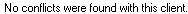
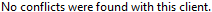
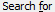
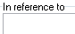

from sikuli import * import logging import myTools #---------------------------------------------------# def fWaitFor_ConflictCheck(): #---------------------------------------------------# logging.debug('- conflict check') time.sleep(5) if exists(): logging.debug('-- conflict msg') type(Key.ENTER) # wait until conflict results displayed logging.debug('-- wait for search') while True: if exists() or exists() or exists() or exists(): break else: time.sleep(2) if exists() or exists(): logging.debug('-- no conflict') type(Key.ENTER) else: logging.debug('-- conflict') # close results list type(Key.F4,KeyModifier.CTRL) time.sleep(1) #---------------------------------------------------# def fCreate_Client(nn1,nn2,fullname,inrefto,clinotes): #---------------------------------------------------# myTools.sectionStartTimeStamp("create client") logging.debug('fCreate_Client: ' + nn1) # make sure timeslips has focus myTools.getFocus() logging.debug('- open client list') type("i",KeyModifier.CTRL) time.sleep(1) logging.debug('- create new client') type("n",KeyModifier.CTRL) logging.debug('- nicknames') time.sleep(1) type(nn1) type(Key.TAB) type(nn2) type(Key.ENTER) time.sleep(1) logging.debug('- name and address') type(fullname) type(Key.TAB) type("Address 1a") type(Key.TAB) type("Address 1b") type(Key.TAB) type("Address 1c") type(Key.TAB) type("City1") type(Key.TAB) type("ST1") type(Key.TAB) type("ZipCode1") type(Key.TAB) type("Country1") type(Key.TAB) # TS2015 has secondard address if int(Settings.tsVersion) > 2014: type("Address 2a") type(Key.TAB) type("Address 2b") type(Key.TAB) type("Address 2c") type(Key.TAB) type("City2") type(Key.TAB) type("ST2") type(Key.TAB) type("ZipCode2") type(Key.TAB) type("Country2") type(Key.TAB) type(Key.TAB) time.sleep(1) logging.debug('- other info') # phone type("Phone1") # in ref to if int(Settings.tsVersion) > 2014: type(Key.F6) else: click() type(inrefto) # notes # go to first page, then shift+f6 type("1",KeyModifier.CTRL) type(Key.F6,KeyModifier.SHIFT) if int(Settings.tsVersion) > 2014: type(Key.F6,KeyModifier.SHIFT) type(clinotes) logging.debug('- save') type("s",KeyModifier.CTRL) fWaitFor_ConflictCheck() # close client info type(Key.F4,KeyModifier.CTRL) time.sleep(1) # close client list type(Key.F4,KeyModifier.CTRL) myTools.sectionEndTimeStamp()